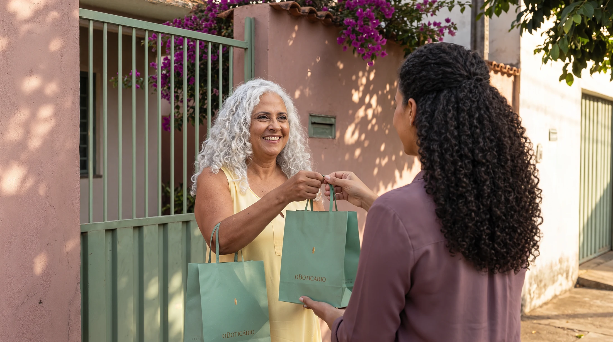

Grupo Boticário · Campanha de revendedores
Vire a chave
Cada revendedor tem um jeito de trabalhar. Combinamos fotografia, IA e direção de arte para levar essas pessoas a diferentes cenários, com atenção aos rostos, aos gestos e aos produtos em cada imagem.
24key visuals
3filmes verticais
1filme de campanha